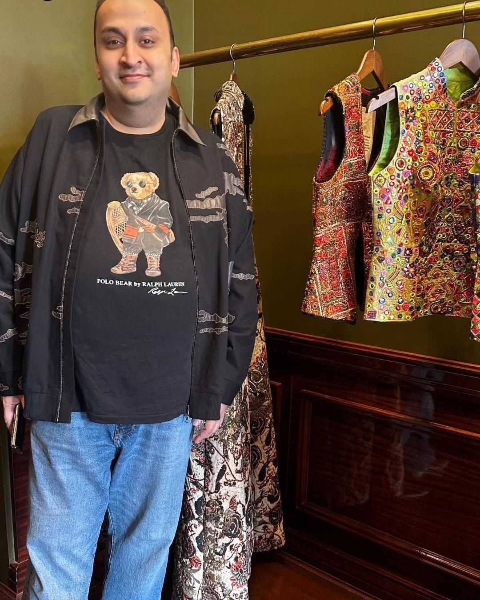

The Journey
A Calling Beyond the Day Job
An MBA by education, Aamir Mazhar always felt drawn toward arranging, organising and creating experiences. What began as a natural instinct eventually became a professional calling. Leaving behind the comfort of a regular job, he stepped into a field that demanded pressure, creativity, patience and constant reinvention.

International Work
Representing Pakistan Across Borders
Some of his most memorable projects include the launch of MCB Bank at Burj Khalifa in Dubai, representing Pakistan at the Samsung launch at Lincoln Center in New York, and further representation in India and Bahrain.
These moments stand out not only for their scale, but for the sense of carrying Pakistan into global rooms. His work sits between logistics, cultural identity, fashion, audience experience and the pressure of delivering on an international stage.